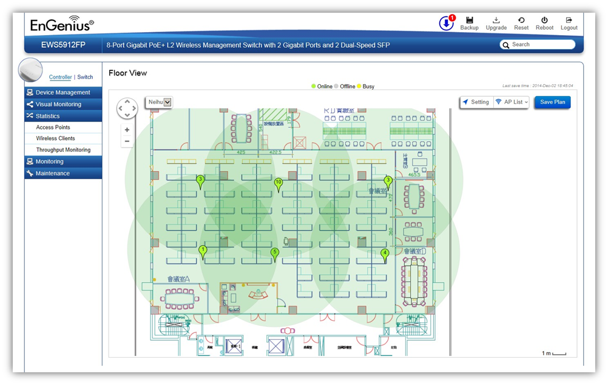

Visual Monitoring > Floor View > Floor Plan View
After importing your floor plan image, you can distribute markers that represent the APs to the correct locations by clicking on AP List and dragging each marker icon to its correct location on the floor plan. Click on Save Plan when you're done to save settings.

Setting
AP Info
AP Information: Select to toggle on/off AP information to be shown on your floor plan.
2.4GHz / 5GHz: Select whether to display signal coverage of 2.4GHz or 5GHz radio.
RF Coverage
Enable: Select to display wireless coverage on your floor plan.
RSSI Value: Adjust RSSI value to emulate using the slider bar.
Calibration Offset: Use the slider bar to adjust ??????????
RSSI Range Simulate: Check the RSSI Simulate box to display RSSI reference on your floor plan. Adjust RSSI coverage range to emulate using the slider bar.
Navigating Tips
Use  to scroll up, down, left, or right.
to scroll up, down, left, or right.
Use  to Zoom in/out. Alternatively, you can use the mouse to navigate by clicking and dragging the left mouse button. Use the mouse wheel to zoom in/out.
to Zoom in/out. Alternatively, you can use the mouse to navigate by clicking and dragging the left mouse button. Use the mouse wheel to zoom in/out.
Mouse over a device to show information about the device.
The number in the marker represents the number of wireless clients that are currently connected to the Access Point.
AP List: Click to reveal a list of APs that the EWS Switch is currently managing.
Save Plan: Click for settings to take effect.
Created with the Personal Edition of HelpNDoc: Free EBook and documentation generator